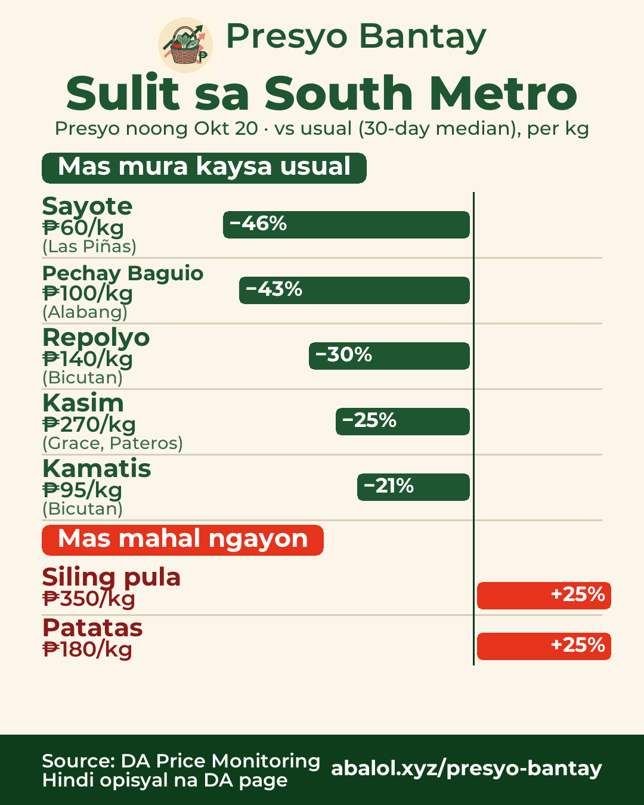
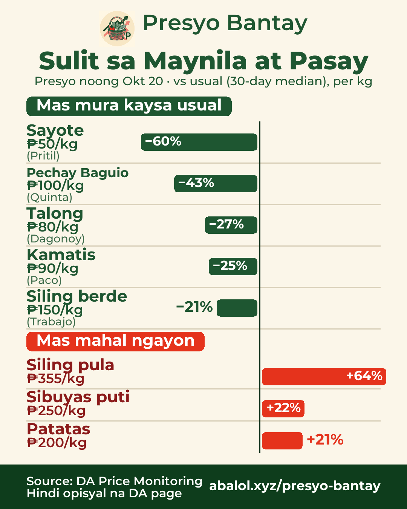
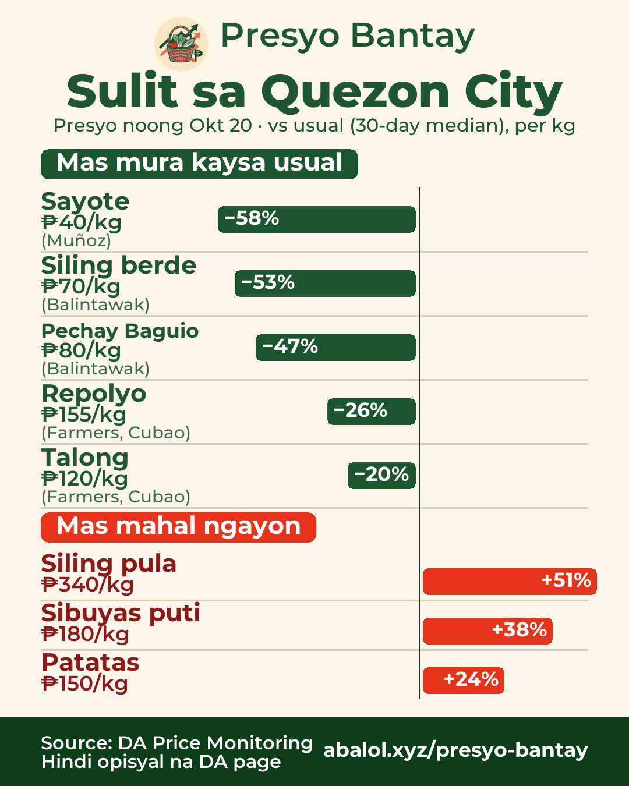
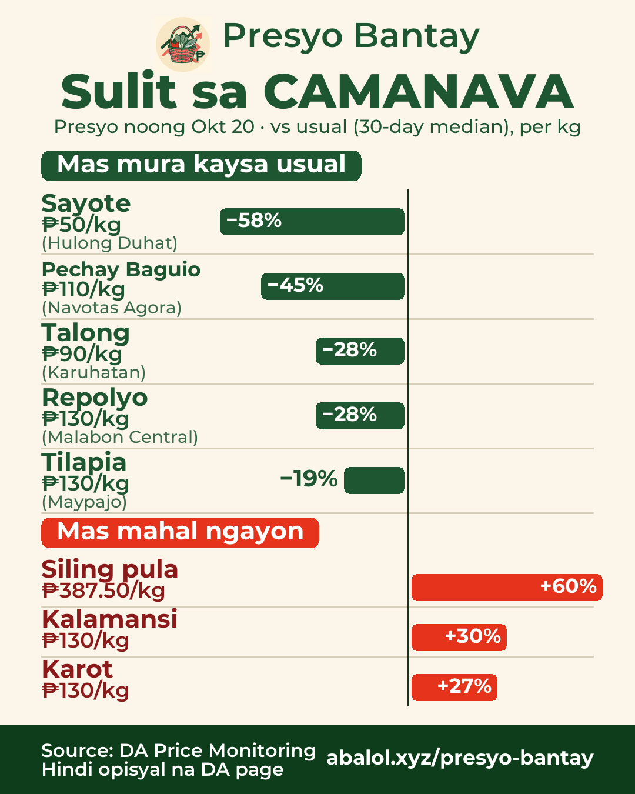
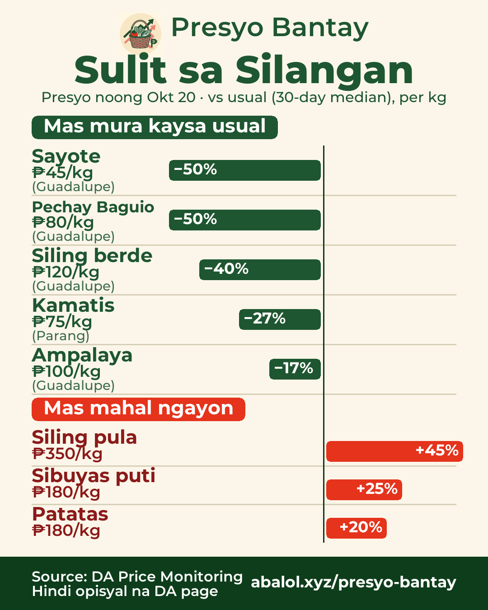

Okt 20, 2026Oct 20, 20262026年10月20日
Sulit sa palengkeMarket deals市場のお買い得
% = kumpara sa usual na presyo (30 araw)% = vs usual price (30-day)% = 30日間のいつもの価格比
South MetroSouth Metro南部（ラス・ピニャス周辺）

🛒 Sulit sa South Metro — presyo noong Okt 20
✅ Mas mura kaysa usual:
- Sayote ₱60/kg (−46%) · Las Piñas
- Pechay Baguio ₱100/kg (−43%) · Alabang
- Repolyo ₱140/kg (−30%) · Bicutan
- Kasim ₱270/kg (−25%) · Grace, Pateros
- Kamatis ₱95/kg (−21%) · Bicutan
⚠️ Mas mahal ngayon:
- Siling pula ₱350/kg (+25%)
- Patatas ₱180/kg (+25%)
🇬🇧 Deals in South Metro — prices of Oct 20
✅ Chayote ₱60 (−46%), Pechay Baguio ₱100 (−43%), Cabbage ₱140 (−30%), Fresh Pork (Kasim) Local ₱270 (−25%), Tomato ₱95 (−21%)
⚠️ Pricier: Red chili ₱350 (+25%), Potato ₱180 (+25%)
🇯🇵 南部（ラス・ピニャス周辺）のお買い得 — 10/20の価格
✅ サヨテ ₱60（−46%）、ペチャイ・バギオ ₱100（−43%）、キャベツ ₱140（−30%）、豚肩ロース ₱270（−25%）、トマト ₱95（−21%）
⚠️ 高め：赤唐辛子 ₱350（+25%）、じゃがいも ₱180（+25%）
Maynila at PasayManila & Pasayマニラ・パサイ

🛒 Sulit sa Maynila at Pasay — presyo noong Okt 20
✅ Mas mura kaysa usual:
- Sayote ₱50/kg (−60%) · Pritil
- Pechay Baguio ₱100/kg (−43%) · Quinta
- Talong ₱80/kg (−27%) · Dagonoy
- Kamatis ₱90/kg (−25%) · Paco
- Siling berde ₱150/kg (−21%) · Trabajo
⚠️ Mas mahal ngayon:
- Siling pula ₱355/kg (+64%)
- Sibuyas puti ₱250/kg (+22%)
- Patatas ₱200/kg (+21%)
🇬🇧 Deals in Manila & Pasay — prices of Oct 20
✅ Chayote ₱50 (−60%), Pechay Baguio ₱100 (−43%), Eggplant ₱80 (−27%), Tomato ₱90 (−25%), Green chili ₱150 (−21%)
⚠️ Pricier: Red chili ₱355 (+64%), White onion ₱250 (+22%), Potato ₱200 (+21%)
🇯🇵 マニラ・パサイのお買い得 — 10/20の価格
✅ サヨテ ₱50（−60%）、ペチャイ・バギオ ₱100（−43%）、ナス ₱80（−27%）、トマト ₱90（−25%）、青唐辛子 ₱150（−21%）
⚠️ 高め：赤唐辛子 ₱355（+64%）、白玉ねぎ ₱250（+22%）、じゃがいも ₱200（+21%）
Quezon CityQuezon Cityケソン市

🛒 Sulit sa Quezon City — presyo noong Okt 20
✅ Mas mura kaysa usual:
- Sayote ₱40/kg (−58%) · Muñoz
- Siling berde ₱70/kg (−53%) · Balintawak
- Pechay Baguio ₱80/kg (−47%) · Balintawak
- Repolyo ₱155/kg (−26%) · Farmers, Cubao
- Talong ₱120/kg (−20%) · Farmers, Cubao
⚠️ Mas mahal ngayon:
- Siling pula ₱340/kg (+51%)
- Sibuyas puti ₱180/kg (+38%)
- Patatas ₱150/kg (+24%)
🇬🇧 Deals in Quezon City — prices of Oct 20
✅ Chayote ₱40 (−58%), Green chili ₱70 (−53%), Pechay Baguio ₱80 (−47%), Cabbage ₱155 (−26%), Eggplant ₱120 (−20%)
⚠️ Pricier: Red chili ₱340 (+51%), White onion ₱180 (+38%), Potato ₱150 (+24%)
🇯🇵 ケソン市のお買い得 — 10/20の価格
✅ サヨテ ₱40（−58%）、青唐辛子 ₱70（−53%）、ペチャイ・バギオ ₱80（−47%）、キャベツ ₱155（−26%）、ナス ₱120（−20%）
⚠️ 高め：赤唐辛子 ₱340（+51%）、白玉ねぎ ₱180（+38%）、じゃがいも ₱150（+24%）
CAMANAVANorth (CAMANAVA)北部（カマナバ）

🛒 Sulit sa CAMANAVA — presyo noong Okt 20
✅ Mas mura kaysa usual:
- Sayote ₱50/kg (−58%) · Hulong Duhat
- Pechay Baguio ₱110/kg (−45%) · Navotas Agora
- Talong ₱90/kg (−28%) · Karuhatan
- Repolyo ₱130/kg (−28%) · Malabon Central
- Tilapia ₱130/kg (−19%) · Maypajo
⚠️ Mas mahal ngayon:
- Siling pula ₱387.50/kg (+60%)
- Kalamansi ₱130/kg (+30%)
- Karot ₱130/kg (+27%)
🇬🇧 Deals in North (CAMANAVA) — prices of Oct 20
✅ Chayote ₱50 (−58%), Pechay Baguio ₱110 (−45%), Eggplant ₱90 (−28%), Cabbage ₱130 (−28%), Tilapia ₱130 (−19%)
⚠️ Pricier: Red chili ₱387.50 (+60%), Calamansi ₱130 (+30%), Carrots ₱130 (+27%)
🇯🇵 北部（カマナバ）のお買い得 — 10/20の価格
✅ サヨテ ₱50（−58%）、ペチャイ・バギオ ₱110（−45%）、ナス ₱90（−28%）、キャベツ ₱130（−28%）、ティラピア ₱130（−19%）
⚠️ 高め：赤唐辛子 ₱387.50（+60%）、カラマンシー ₱130（+30%）、にんじん ₱130（+27%）
SilanganEast Metro東部

🛒 Sulit sa Silangan — presyo noong Okt 20
✅ Mas mura kaysa usual:
- Sayote ₱45/kg (−50%) · Guadalupe
- Pechay Baguio ₱80/kg (−50%) · Guadalupe
- Siling berde ₱120/kg (−40%) · Guadalupe
- Kamatis ₱75/kg (−27%) · Parang
- Ampalaya ₱100/kg (−17%) · Guadalupe
⚠️ Mas mahal ngayon:
- Siling pula ₱350/kg (+45%)
- Sibuyas puti ₱180/kg (+25%)
- Patatas ₱180/kg (+20%)
🇬🇧 Deals in East Metro — prices of Oct 20
✅ Chayote ₱45 (−50%), Pechay Baguio ₱80 (−50%), Green chili ₱120 (−40%), Tomato ₱75 (−27%), Ampalaya ₱100 (−17%)
⚠️ Pricier: Red chili ₱350 (+45%), White onion ₱180 (+25%), Potato ₱180 (+20%)
🇯🇵 東部のお買い得 — 10/20の価格
✅ サヨテ ₱45（−50%）、ペチャイ・バギオ ₱80（−50%）、青唐辛子 ₱120（−40%）、トマト ₱75（−27%）、ゴーヤ ₱100（−17%）
⚠️ 高め：赤唐辛子 ₱350（+45%）、白玉ねぎ ₱180（+25%）、じゃがいも ₱180（+20%）